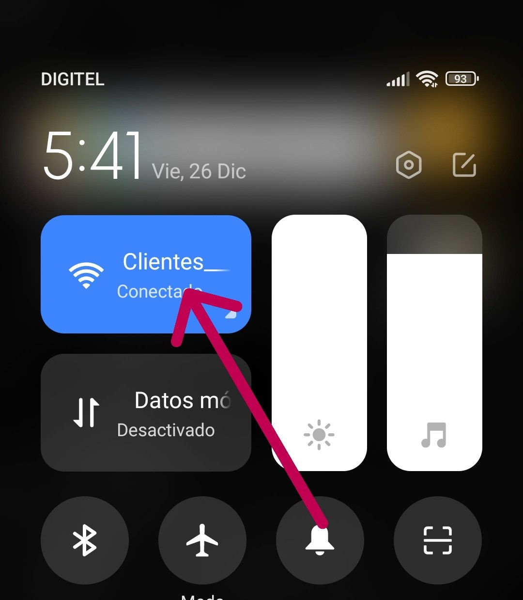
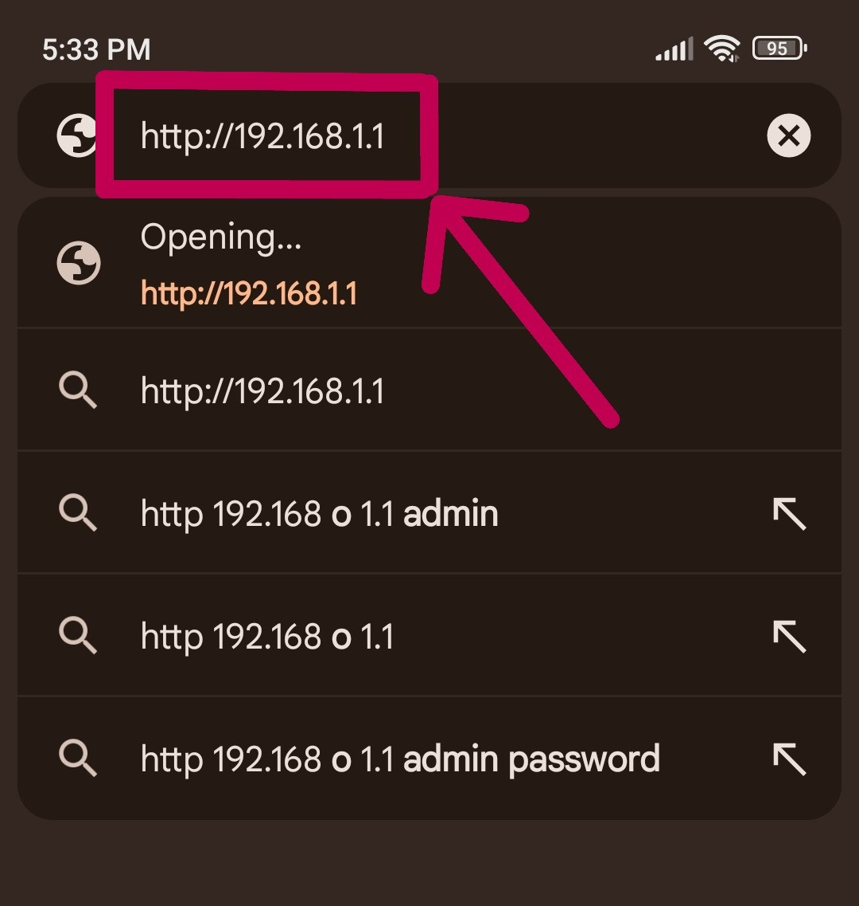
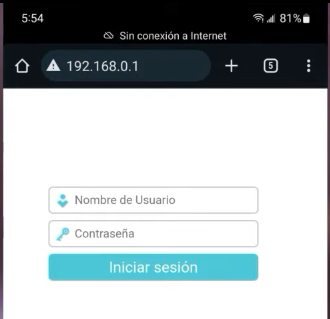
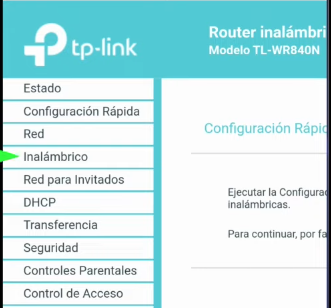
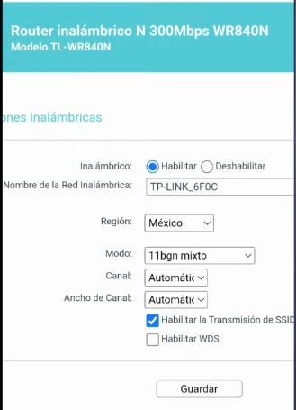

Cambiar nombre y clave del WiFi
Router tplink
Guía técnica de autosoporte – MINET C.A
Esta guía explica cómo cambiar el nombre y la contraseña de la red WiFi en un router tplink, lo cual permite mejorar la seguridad de la conexión y controlar qué dispositivos pueden conectarse a la red.
Qué necesitas
- Teléfono móvil
- Estar conectado al WiFi del router tplink
- Router encendido
- Navegador web (Chrome, Firefox u otro)
Paso 1
Conéctate desde tu teléfono al WiFi del router tplink.
Paso 2
Abre el navegador web en tu teléfono (Chrome, Firefox u otro).

Paso 3
En la barra de direcciones del navegador, escribe o presiona el siguiente enlace:
Nota: debes estar conectado al WiFi del router para que el enlace funcione correctamente.
Paso 4
Ingresa al panel de configuración del router. Si el sistema solicita una contraseña, utiliza la proporcionada por el soporte técnico de MINET.
Paso 5
Busca y selecciona la opción Configuración inalámbrica (Wireless Settings / WiFi).
Paso 6
Ubica el campo Nombre de la red (SSID / Network Name) e ingresa el nuevo nombre para tu WiFi.
Paso 7
Ubica el campo Contraseña WiFi (Password / Wireless Key) e ingresa la nueva contraseña.
Se recomienda utilizar una contraseña segura.


Paso 8
Presiona el botón Guardar (Save / Apply) para aplicar los cambios.

Paso 9
Espera unos segundos mientras el router guarda la configuración. Luego, vuelve a conectarte al WiFi utilizando el nuevo nombre y contraseña.
Advertencias importantes
- No presiones el botón RESET del router.
- No modifiques otras opciones del menú si no estás seguro.
- La conexión WiFi se desconectará momentáneamente al guardar los cambios.